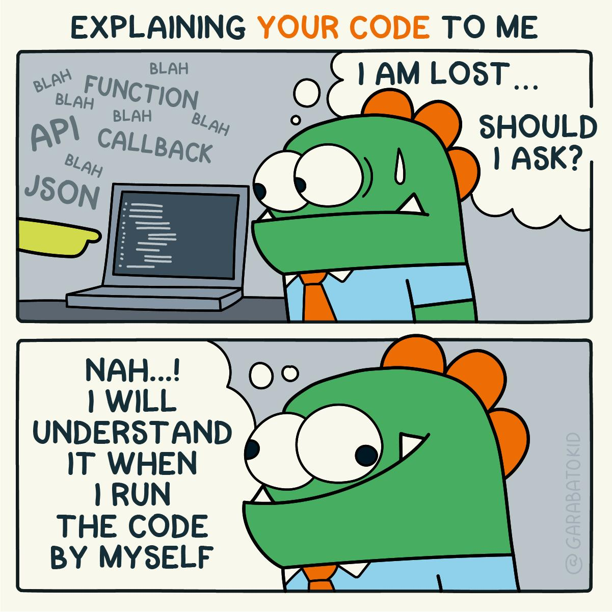

MGH module matters
- Why is this the first module of the course?
- All technical work of the course is taught and examined in R
- Practice repeatedly as you progress through the course
- Why R?
- Use what others use
- Rich set of packages
- Relatively gentle learning curve
- Interactive environment
- Computers are cheaper than people
- I have many programming languages on my CV, can I skip this module?
- How to write
a <- 1in your language of choice?1
- How to write
- At the end of the week
- Know what can be done in R
- Know how to learn more about R
- Have compiled your own R cheat sheet
- Limitations
- 30 hours of R from this module
- This is only the first 5% of what R can do.
- More practice in your own time
R will start to make more sense as the week goes on.
Don’t just listen and read. Type and execute all the code you see in the lectures at least once on your own computer.

Module Schedule
| Time | Session | Topics |
|---|---|---|
| 15 Oct. AM | Preliminaries and the R Development Toolchain | R base, RStudio, Functions |
| 16 Oct. PM | Operators and Control Flow | Operators, Control flow, Environments, Functions |
| 17 Oct. AM | Functions | list, Functions |
| 17 Oct. PM | Data Container Types I (Homogeneous) | Atomic vectors, matrix |
| 21 Oct. AM | Tutorial 1: Estimating Pi using the Monte-Carlo method | Modelling random events, Good practices, Performance |
| 21 Oct. PM | Data Container Types II (Heterogeneous) | data.frame, extraction, reshape, aggregate, csv, … |
| 23 Oct. AM | Working with files and data | |
| 23 Oct. PM | Visualisation | Base R graphics, ggplot, R Markdown |
| 24 Oct. AM | Tutorial 2: Reproducing plots from published journals | |
| 24 Oct. PM | ODE Model Building with deSolve | Model limits, Lorenz system, Growth models |
| Time | Session | Topics |
|---|---|---|
| Mon. AM | Preliminaries and the R Development Toolchain | R base, RStudio, Functions |
| Mon. PM | Operators and Control Flow | Operators, Control flow, Environments, Functions |
| Tue. AM | Functions | list, Functions |
| Tue. PM | Data Container Types I (Homogeneous) | Atomic vectors, matrix |
| Wed. AM | Estimating Pi using the Monte-Carlo method | Good practices, Performance |
| Wed. PM | Data Container Types II (Heterogeneous) | data.frame, extraction, reshape, aggregate, csv, … |
| Thu. AM | Working with files and data | |
| Thu. PM | Visualisation | Base R graphics, ggplot2, R Markdown |
| Fri. AM | Model Building I (Statistical Models) | Interpolation, regression, optimisation |
| Fri. PM | Model Building II (Mathematical Models) | Model limits, Lorenz system, Growth models |
Works
- Exercises during each session
- Quiz at the end of each session
Module Schedule (2021-22)
| Time | Session | Topics |
|---|---|---|
| Mon. AM | Fundamentals I | R base, RStudio, Operators, Functions |
| Mon. PM | Fundamentals II | Control flow, Environments, Functions |
| Tue. AM | Data structures | Atomic vectors, matrix, list, Functions |
| Tue. PM | Data manipulation | data.frame, extraction, reshape, aggregate, csv, … |
| Wed. AM | Data visualisation I | Formulae, Base R graphics |
| Wed. PM | Data visualisation II | R packages, R markdown, ggplot2 |
| Thu. AM | Statistical Models | Interpolation, regression, optimisation |
| Thu. PM | Mathematical Models | Model limits, Lorenz system, Growth models |
| Fri. AM | Summary | Good practices, Performance |
Works
- Exercises during & after each session
- Mid-week quiz
- 25 questions (Canvas Quiz)
- Available from 11 Oct 0:00
- Due on 13 Oct 23:59 (end of Wednesday Wk1)
- Module formative assessment
- 20 questions (Canvas Quiz)
- Available from 15 Oct 0:00
- Due on 20 Oct 23:59 (end of Wednesday Wk2)
If your answer is
a = 1for Python, orint a = 1;for C/C++, then you should not skip this module.↩︎